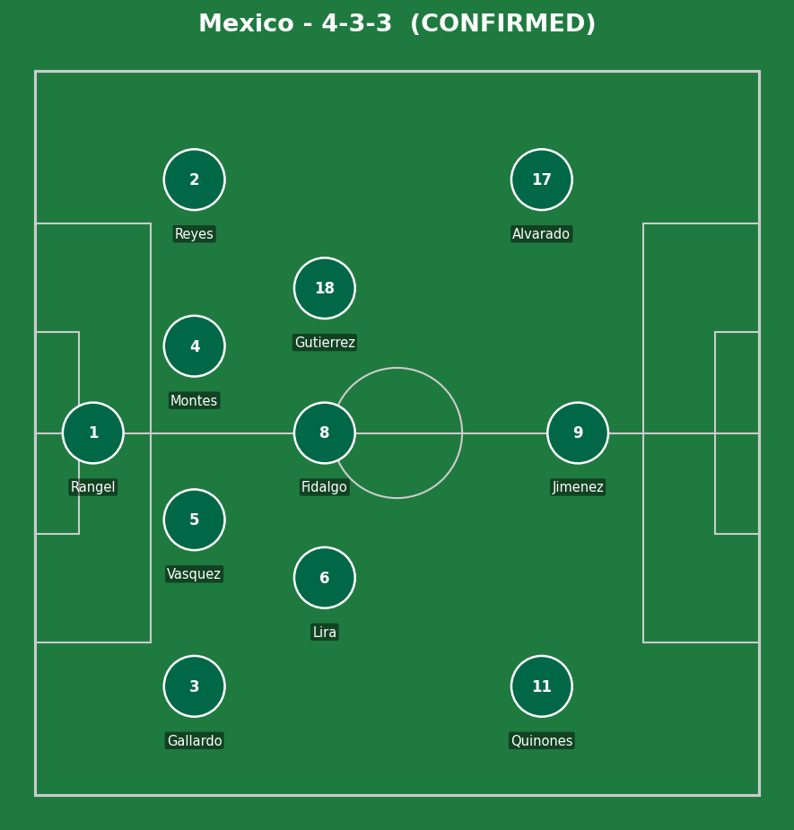
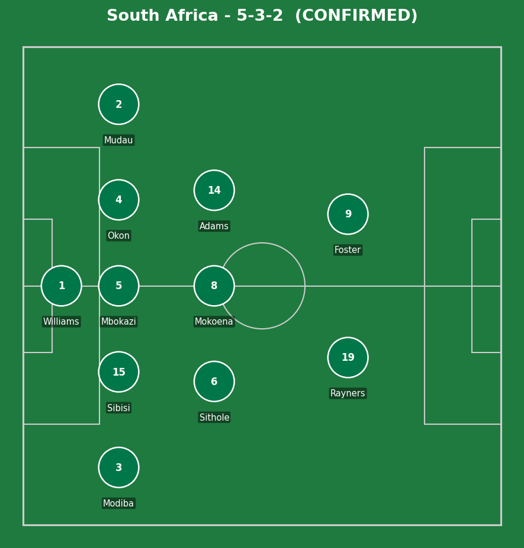
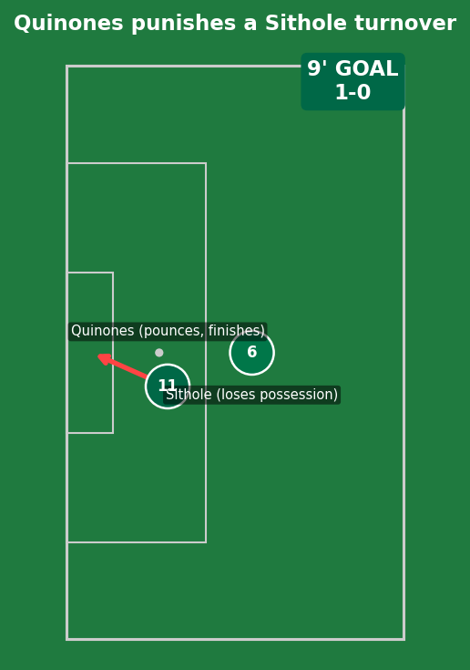
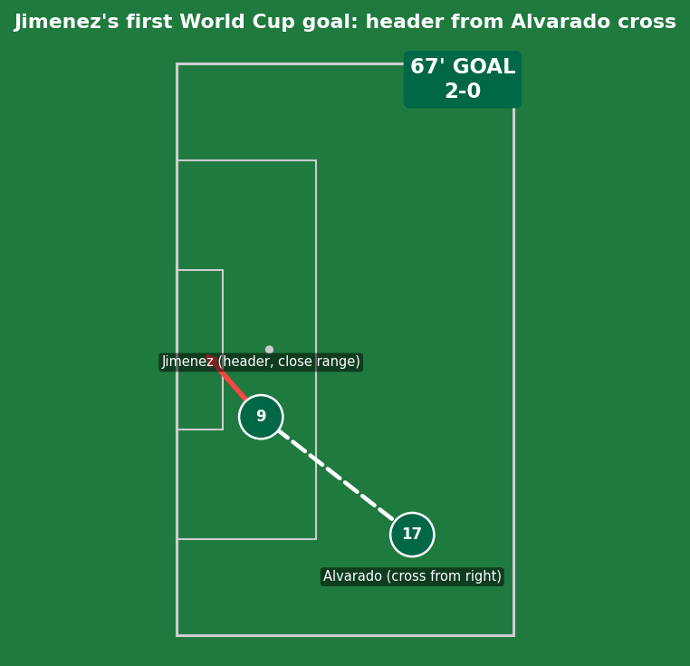
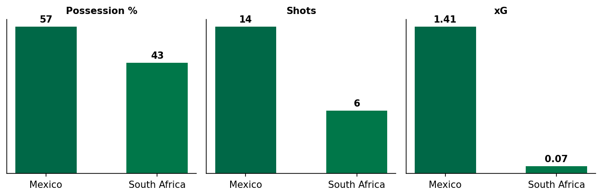
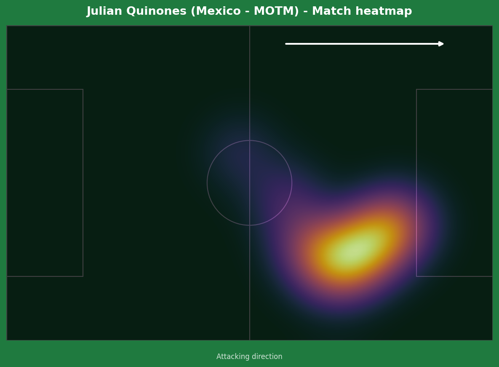
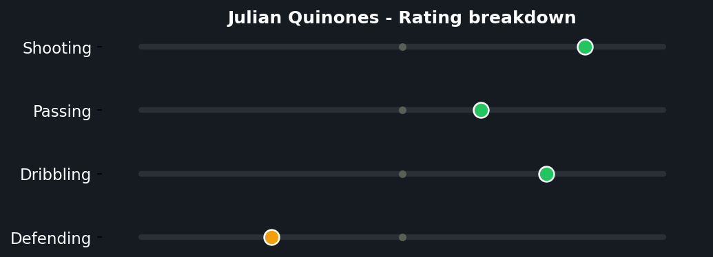
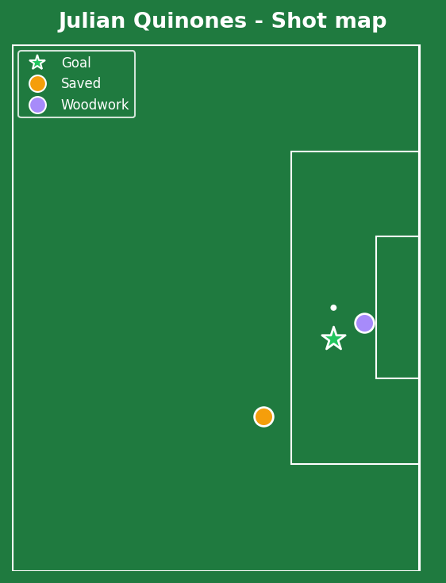

Mexico opened the 2026 World Cup with a fitting symmetry to 2010 - back then it was a 1-1 draw in Johannesburg, this time a comfortable home win in Mexico City, sixteen years later almost to the day. Julian Quinones punished a Sphephelo Sithole error after 9 minutes, Raul Jimenez headed in his first-ever World Cup goal in the 67th, and the match descended into genuine chaos from there: three red cards across both sides turned a routine group opener into one of the most talked-about games of the tournament's first matchday.


Mexico (4-3-3): Rangel; Gallardo, Vasquez, Montes, Reyes; Lira, Fidalgo, Gutierrez; Quinones, Jimenez, Alvarado. South Africa (5-3-2): Williams; Modiba, Sibisi, Mbokazi, Okon, Mudau; Sithole, Mokoena, Adams; Rayners, Foster.
South Africa's 5-3-2 was a defensively cautious choice for an opener against the host nation - and in fairness, it mostly did its job of limiting clear sight-of-goal moments, reflected in Mexico's modest 1.41 xG across the full 90. The problem wasn't the structure itself, it was the discipline within it: Sithole's costly turnover for the opener and his red card for a last-man foul both came from individual lapses under pressure, not the back five being torn open.
Mexico's 4-3-3 didn't need to be spectacular - the home crowd, South Africa's growing indiscipline, and two clean finishing moments were enough. Alvarado and Quinones both offered real width and direct running at a back five that, while compact centrally, had to defend a lot of one-on-one duels out wide as the game opened up after the dismissals.
The key tactical moment: Sithole's red card three minutes into the second half. Going down to 10 men against the host nation, with the score already 1-0, removed any realistic path back into the game and forced South Africa into a containment mode that produced two more cards rather than a fightback.

A clean individual error from Sithole, not a Mexico mistake created by good play. He received possession in a relatively comfortable position near the edge of his own box and attempted to bring the ball under control under modest pressure - the wrong choice was attempting to dribble out rather than playing simple, given Quinones had already cut off the easiest passing lane. Quinones read the touch, won the ball clean, and finished low into the corner from a tight angle - composed finishing under a closing angle, capitalizing fully on an unforced opposition mistake.

A goal built on a simple overload rather than individual brilliance. Alvarado got into a crossing position down the right with both South African wide defenders occupied elsewhere - a product of South Africa's back five being stretched after playing down a man for over 20 minutes by this point. Jimenez's movement to the near post was well-timed but unmarked, meaning the finish itself required composure under the occasion (his first World Cup goal at 35 years old, on home soil) more than technical difficulty - a clean header into the corner with a defender unable to recover in time.
Sithole (South Africa, ~50') - a professional foul as last man, denying Gutierrez a clear run on goal. A correct, clear-cut decision; no VAR controversy here, the offence was obvious in real time.
Montes (Mexico, 90+2') - clipped Mudau just outside the box as the last defender with South Africa breaking with numbers. Also correctly given - denying an obvious goalscoring opportunity, textbook red regardless of the team committing it.
Zwane (South Africa, 84') - adjudged to have slapped Alvarado in the face attempting to shrug off the challenge. The most debatable of the three in terms of intent versus genuine violent conduct, but referees are bound to act on any contact to the face once review confirms it occurred, and replays did show contact.
No referee or VAR controversy to flag in this one - all three dismissals were correctly identified and given, even if the Zwane decision was the closest call of the three.

The 1.41 to 0.07 xG gap is the real story of the 90 minutes that the 2-0 scoreline only partially captures - Mexico were dominant for long stretches even before the numerical advantage kicked in.



An efficient, direct performance rather than a high-volume one - just 3 shots, but a goal and a post off the other two means he was clinical with the chances he actually had. The heatmap shows him operating almost entirely down the right channel, consistent with the shot map's cluster of attempts from the same zone - a player doing one specific job (stretching the back five's left side) and doing it very well, rather than drifting and searching for the game. The rating breakdown's strongly negative defending score is unsurprising and not really a criticism here - Mexico's gameplan, especially after South Africa went down to 10, never asked him to track back.
Illustrative reconstruction based on known event locations, not raw GPS tracking data.
Rangel - 6.5 (untroubled)
Quinones - 8.0 ⭐ MOTM (goal, post)
Jimenez - 7.5 (historic first goal)
Montes - 5.0 (late red card)
Williams - 6.0 (kept it from being heavier)
Sithole - 3.5 (error plus red card)
Mbokazi - 6.0 (solid before the reds)
Zwane - 4.0 (costly red card)
Next: Mexico face South Korea. South Africa face Czechia, already needing a response after this chaotic opener.